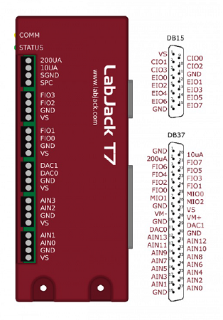

LabJackT7
-
class
devices.LabJackT7(serialnum=None)[source] The class to represent the LabJack T7
- Parameters
serialnum (int) – The device serial number.
Ports that are made available with this class are:
Analog Output (0 to 5V) :
'DAC0','DAC1'Analog Input (+/-10V) :
'AIN0','AIN1', … ,'AIN13'Digital I/O :
'FIO0','FIO1', … ,'FIO7'Digital I/O :
'EIO0','EIO1', … ,'EIO7'
Device-specific methods:
set_range - Sets analog input voltage range
set_reference - Sets analog input reference voltage point
set_TC - Sets LabJack configuration for thermocouple input
get_TCtemp - Gets thermocouple temperature reading
Connect to the first found T7:
>>> from labjack_unified.devices import LabJackT7 >>> ljt7 = LabJackT7() >>> ljt7.display_info() >>> ljt7.close()
You can also connect to a specific device using its serial number.
>>> ljt7 = LabJackT7(370012345)
General
LabJackT7.get_labjacktemp(unit='C')[source]Get ambient temperature from LabJack’s internal sensor.
- Parameters
unit (str) – The temperature measurement unit. Valid values are
'C'or'F'. Default unit is'C'.- Returns
The internal sensor temperature reading.
- Return type
float
Get temperature reading in Celsius:
>>> ljt7.get_labjacktemp()Get temperature reading in Fahrenheit:
>>> ljt7.get_labjacktemp(unit='F')
I/O
LabJackT7.set_digital(names, values)[source]Write the digital state to an output port. It also sets the port direction to output.
- Parameters
name (str, list(str)) – The port name (or a list of names) to set the state.
state (int, list(int)) – The digital state (or a list of states) 0 = Low, 1 = High.
Set port
'FIO0'bit to high:>>> ljt7.set_digital('FIO0', 1)Set ports
'FIO0','FIO1'and'FIO6'bits to high, low and high:>>> ljt7.set_digital(['FIO0', 'FIO1', 'FIO6'], [1, 0, 1])
LabJackT7.get_digital(names)[source]Read the digital state from an input port. It also sets the port direction to input.
- Parameters
name (str, list(str)) – The port name (or list of port names) to get the state.
- Returns
The state of the digital port. 0 = Low, 1 = High.
- Return type
int, list(int)
Get logic state on port
'FIO2':>>> ljt7.get_digital('FIO2')Get logic states on ports
'FIO2','FIO3'and'FIO7':>>> ljt7.get_digital(['FIO2', 'FIO3', 'FIO7'])
LabJackT7.set_analog(names, values)[source]Set analog output voltage.
- Parameters
name (str, list(str)) – The port name to set the output voltage. Available ports are
'DAC0'and'DAC1'. Both ports can be set at the same time using a list containing the two names.value (float, list(float)) – The output voltage between
0and5V. A list containing values can be used in conjunction with a list with the two port names.Set port
'DAC1'output voltage to2.2V:>>> ljt7.set_analog('DAC1', 2.2)Set port
'DAC0'output voltage to2.5V and'DAC1'to3.2V:>>> ljt7.set_analog(['DAC0', 'DAC1'], [2.5, 3.2])
LabJackT7.get_analog(names)[source]Get analog input voltage.
- Parameters
name (str, list(str)) – THe port name (or list of names) to get the input voltage. Ports
'AIN0'to'AIN13'are possible names and can read a range between -10 and +10V.- Returns
The input voltage value.
- Return type
float, list(float)
Get input voltage on port
'AIN0':>>> ljt7.get_analog('AIN0')Get input voltages on ports
'AIN0','AIN2'and'AIN3':>>> ljt7.get_analog(['AIN0', 'AIN2', 'AIN3'])Note
Ports that are not connected may have erratic readings.
See set_range and set_reference for more options on analog inputs.
LabJackT7.set_range(names, ranges)[source]Set analog input voltage range.
- Parameters
names (str, list(str)) – The analog port(s) that will have their ranges modified. Use
'ALL'to set all analog input ports to the same range.ranges (float, list(float)) – The voltage range value to be used. Valid ranges are +/-
10,1,0.1,0.01V. If a single value is used, it will be applied to all ports in names.Set port
'AIN0'with a range of +/-1V:>>> ljt7.set_range('AIN0', 1)Set port
'AIN0'and'AIN2'with a range of +/-0.1and0.01V:>>> ljt7.set_range(['AIN0', 'AIN2'], [0.1, 0.01])Set all ports with a (default) range of +/-
10V:>>> ljt7.set_range('ALL', 10)
LabJackT7.set_reference(names, mode='single-ended')[source]Set reference point for analog input voltage.
- Parameters
names (str, list(str)) – The analog port(s) that will that will have the voltage reference point modified.
mode (str) – The reference mode for the analog ports. It and can be either
'single-ended'or'differential'. Default is'single-ended'. Use'ALL'to set all analog input ports to the same mode.Set port
'AIN0'for differential reading with port'AIN1':>>> ljt7.set_reference('AIN0', differential')Set ports
'AIN0','AIN2', and'AIN6'for differential reading respecitvely with ports'AIN1','AIN3', and'AIN7':>>> ljt7.set_reference(['AIN0', 'AIN2', 'AIN6'], 'differential')Set all ports for single-ended reading:
>>> ljt7.set_reference('ALL', 'single-ended')Note
Differential reading uses two consecutive even-odd ports. Valid ports for differential reading are AIN0/2/4/6/8/10/12.
Streaming
LabJackT7.set_stream(names, scanrate=100000, readrate=0.5, clocksource='INT', exttrigger=None)[source]Set and start data streaming.
- Parameters
name (str, list(str)) – The port name (or list of names) to be streamed. Any analog and/or digital port can be used.
scanrate (int) – The scan rate (Hz) of the data streaming. The default (and maximum) value is
100000Hz. The effective scan frequency of each port is the scan rate divided by the number of scanned ports. When clocksource is equal to'EXT', scanrate is interpreted as the number of pulses per block of data.readrate (float) – The rate in seconds at which blocks of data are retrieved from the data buffer by get_stream. The default value is
0.5seconds. When clocksource is equal to'EXT', readrate is interpreted as the number of blocks of data to be retrieved each time.clocksource (str) – The source of the streaming clock. It indicates whether the LabJack internal clock or an external clock (pulse train) will be used. In the case of an external clock, the digital signal must be connected to
'CIO3'('DIO16'). The default value is'INT'.exttrigger (str) – The DIO port name containing an external trigger used to start the streaming.
Configure
100000Hz streaming with0.5s data blocks from port'AIN0':>>> ljt7.set_stream('AIN0')Configure streaming for
1s data blocks from analog and digital ports.>>> ljt7.set_stream(['AIN0', 'AIN1', 'DIO6', 'DIO7'], readrate=1)Configure streaming for
0.5s data blocks from analog ports. The scan rate is50000Samples/s (25000 S/s for each port):>>> ljt7.set_stream(['AIN0','AIN1'], scanrate=50000)Configure streaming for 1 block of 1024 Samples/port per data retrieve. The external clock signal must be connected to
'CIO3'('DIO16'):>>> ljt7.set_stream(['AIN0','AIN1'], scanrate=1024, readrate=1, clocksource='EXT')Configure streaming for 3 blocks of 600 Samples/port. Port
'DIO1'is connected to an external trigger that will start the streaming. The external clock signal must be connected to'CIO3'('DIO16'):>>> ljt7.set_stream(['AIN0','DIO0'], scanrate=600, readrate=3, clocksource='EXT', exttrigger='DIO1')Note
exttrigger port must use the DIO naming convention, i.e.: ports
'DIO0'to'DIO16'.Note
Data streaming starts immediatelly after set_stream is invoked, unless exttrigger is used.
LabJackT7.get_stream()[source]Get streaming data block.
- Returns
5-tuple
dt
The sampling period (s) between each data point. When the streaming is configured with an external clock, dt contains the delta times between two consecutive samples.
data
The numpy m-by-n array containing the streamed data where m is the number of samples per port in the block and n is the number of ports defined in set_stream
numscans
The actual number of scans per port in the data block.
commbacklog
The communication backlog in % (increasing values indicate that the computer cannot keep up with the data download from the T7 driver)
devbacklog
The T7 device backlog in % (increasing values indicate that the device cannot keep up with the data streaming - usually not the case)
- Return type
(float, ndarray, int, float, float)
Retrieve one data block:
>>> dt, datablock, commbacklog, T7backlog = ljt7.get_stream()Create the time array for the acquired block (internal clock):
>>> t = dt * np.linspace(0, datablock.shape[0]-1, datablock.shape[0])
PWM
LabJackT7.set_pwm(pwmnum=1, dirport1=None, dirport2=None, frequency=250)[source]Configure PWM output.
- Parameters
pwmnum (int) – The number of PWM output signals.
1or2PWMs can be used. For one PWM, the output port is'FIO0'. For two PWMs, the output ports are'FIO0'and'FIO4'.dirport1 (None, str) –
The type of ports that control the PWM direction for electric motor control. There are three options:
None- Default value (no direction ports are used)
'DAC'- Uses analog ports'DAC0'and'DAC1'
'DIO'- Uses digital ports'EIO0'and'EIO1'dirport2 (None, str) – Same as dirport1. It’s used when two PWM outputs are enabled. The
'DAC'option can only be used for one set of direction ports, unless the two motors are running synchronously. For the'DIO'option, digital ports'EIO2'and'EIO3'are used.frequency (int) – The PWM signal frequency in Hz. In the case of two PWMs, both will have the same frequency
Set 1 PWM for motor control on
'FIO0'with direction ports on'DAC0'and'DAC1'. The PWM frequency is the default250Hz:>>> ljt7.set_pwm(dirport1='DAC')Set 2 PWMs on ports
'FIO0'and'FIO4'with a frequency of500Hz:>>> ljt7.set_pwm(pwmnum=2, frequency=500)Set 2 PWMs for motor control on ports
'FIO0'and'FIO4', using the digital ports'EIO0'and'EIO1'for motor 1 direction, and'EIO2'and'EIO3'for motor 2 direction. The PWM frequency is750Hz:>>> ljt7.set_pwm(pwmnum=2, dirport1='DIO', dirport2='DIO', frequency=750)Note
When using digital ports, a 10 kOhm resistor has to be connected from the LabJack VS port to each one of the DIO ports to ensure true high and low states.
Note
Two PWMs and two encoders can be setup at the same time on the T7 device.
LabJackT7.set_dutycycle(value1=None, value2=None, brake1=False, brake2=False)[source]Set PWM duty cycle value.
- Parameters
value1 (float) – The PWM 1 duty cycle percent value between
-100and100.value2 (float) – The PWM 2 duty cycle percent value between
-100and100.brake1 (bool) – The motor 1 brake option used when dutycycle is zero. Brake is applied when
True. Motor is floating whenFalse.brake2 (bool) – The motor 2 brake option used when dutycycle is zero. Brake is applied when
True. Motor is floating whenFalse.Set duty cycle to
50% on PWM 1:>>> ljt7.set_dutycycle(value1=50)Set duty cycle to
25% (reverse rotation) on PWM 2:>>> ljt7.set_dutycycle(value2=-25)Set duty cycle to
20% and40% on PWMs 1 and 2:>>> ljt7.set_dutycycle(value1=20, value2=40)Stop motor 2 and apply brake:
>>> ljt7.set_dutycycle(value2=0, brake2=True)Note
Avoid suddenly switching the direction of rotation to avoid damaging the motor.
You can use the brake option True to hold the motor in position.
Quadrature
LabJackT7.set_quadrature(quadnum=1, zphase1=False, zphase2=False)[source]Configure quadrature encoder input.
- Parameters
quadnum (int) – The number of quadrature input signals.
1or2encoders can be used. For one encoder, the input ports are'FIO2'and'FIO3'. For two encoders, the input ports for the second one are'FIO6'and'FIO7'.zphase1 (bool) – The logic value indicating if a Z phase reference pulse is used for the first encoder. Port
'FIO1'is used.zphase2 – The logic value indicating if a Z phase reference pulse is used for the second encoder. Port
'FIO1'is used for the first encoder and port'FIO5'is used for the second encoder. zphase2 is ignored if quadnum =1.Set ports
'FIO2'and'FIO3'for encoder with phase A and B signals only:>>> ljt7.set_quadrature()Set ports
'FIO2'and'FIO3'for encoder phase A and B signals, and port'FIO1'for the reference Z phase:>>> ljt7.set_quadrature(zphase1=True)Set 2 encoders with Z phase. A and B phases are on ports
'FIO2'and'FIO3'for encoder 1, and'FIO6'and'FIO7'for encoder 2. The Z phase ports are respectively'FIO1'and'FIO5':>>> ljt7.set_quadrature(quadnum=2, zphase1=True, zphase2=True)Note
Two PWMs and two encoders can be setup at the same time on the T7 device.
LabJackT7.get_counter()[source]Get current quadrature counter value.
- Returns
The counter value or a list with 2 values for 2 encoders.
- Return type
int, list(int)
>>> ljt7.get_counter()Note
Because the qudrature counter counts rising and falling edges of phases A and B, a 1024 pulse/rev encoder will generate 4096 counts for a full shaft turn.
LabJackT7.reset_counter(counter1=True, counter2=True)[source]Reset quadrature counter value.
- Parameters
counter1 (bool) – The flag indicating whether to reset counter 1 or not. The default value is
Trueand it resets the counter.counter2 (bool) – The flag indicating whether to reset counter 2 or not. The default value is
Trueand it resets the counter.Resets current counter value of all encoders.
>>> ljt7.reset_counter()Resets current counter value only for second encoder.
>>> ljt7.reset_counter(counter1=False)Note
The count is only reset when a Z phase isn’t being used.
Thermocouple
LabJackT7.set_TC(names, types, unit='C')[source]Set configuration for thermocouple input.
- Parameters
names (str, list(str)) – The analog port(s) that will be used for thermocouple input. Ports
'AIN0'to'AIN3'are recommended for higher measurement accuracy. The negative thermocouple wire should be connected to the LabJack GND.types (str, list(str)) – The thermocouple type. It can be a single string or a list with same length as names. Valid types are:
'B','E','J','K','N','R','S','T', and'C'.unit (str) – The temperature measurement unit. Valid values are
'C'or'F'. Default unit is'C'.Set port
'AIN0'for thermocouple type'K':>>> ljt7.set_TC('AIN0', 'K')Set ports
'AIN0','AIN2', and'AIN3'for thermocouples type'K'and'J'with measurement in Fahrenheit:>>> ljt7.set_TC(['AIN0', 'AIN2', 'AIN3'], ['K', 'J', 'J'], unit='F')